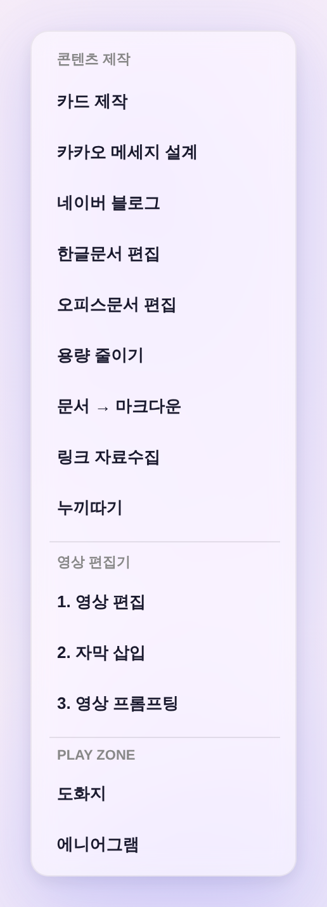

콘텐츠 제작 드롭다운 — 메뉴 재배치(SNS · Edit · Utility)
운영자 260805 「콘텐츠 제작 메뉴 순서 배치 — SNS(카카오채널 톡·블로그·카페 포스팅) / Edit(이미지 편집·영상 편집) / Utility(파일 용량 줄이기·도화지), 관련 없는 건 숨김」 · 14항목 → 6항목 3구획 · 숨김 = 로고 제작 전례(주석 보존 · 도구 생존)
전 · 후 — 데스크톱 드롭다운 (모바일 햄버거 아코디언 = 같은 빌더 공유 → 자동 동일)
구획 라벨 문법 = 구 「영상 편집기」·「PLAY ZONE」 섹션 자구 그대로(신규 값 0) · 항목 결(itemCss·호버 pill)도 그대로 — 배치·이름만 변경.
전 — 14항목 (도구 등재 순서 나열)

카드 제작~누끼따기 9개 평면 나열 + 영상 편집기(3) + PLAY ZONE(2) — 쓰임새 구분 없음
후 — 6항목 · SNS / Edit / Utility

SNS(카카오채널 톡 · 블로그·카페 포스팅) / Edit(이미지 편집 · 영상 편집) / Utility(파일 용량 줄이기 · 도화지)
항목 대응표 — 구 14 → 신 6 + 숨김 8
이름은 운영자 지시 자구 그대로(메뉴만 개명 — 도구 화면 안 제목·최소화 칩 라벨은 기존 유지).
| 신 메뉴 | 구 메뉴 | 여는 것 | 비고 |
|---|---|---|---|
| SNS ▸ 카카오채널 톡 | 카카오 메세지 설계 | openKakaoDesigner() | 개명만 — 같은 도구 |
| SNS ▸ 블로그·카페 포스팅 | 네이버 블로그 | openNaverBlogTool() | 개명만 · 모바일 「더보기」 시트도 같은 이름으로 통일 |
| Edit ▸ 이미지 편집 | 카드 제작 | openCardMaker() | 매핑 추정 — 앱 내 이미지 도구(사진 절삭+문구→PNG). 누끼따기 의도였다면 onclick 1곳 교체로 전환 |
| Edit ▸ 영상 편집 | 영상 편집기 1·2·3 | openVideoEditor('edit') | 진입점 3개 → 1개. 자막 삽입·영상 프롬프팅은 도구 안 탭으로 그대로 진입 가능 |
| Utility ▸ 파일 용량 줄이기 | 용량 줄이기 | openFileSlimmer() | 개명만 |
| Utility ▸ 도화지 | PLAY ZONE ▸ 도화지 | openBookingProcess() | 구획만 이사 |
| 숨김 | 한글문서 편집 · 오피스문서 편집 · 문서 → 마크다운 · 링크 자료수집 · 누끼따기 · 에니어그램 · (로고 제작=1차 유지) | — | 주석 보존 = 롤백 1줄 · 함수·CSS·딥링크 전부 생존 |
⚠ 모바일 「더보기」 시트 동기화 — 블로그·카페 포스팅 개명 + 링크 자료수집·에니어그램 숨김(로고 제작 전례 = 데스크톱과 양쪽 동시). 도화지·플랫폼 현황 등 나머지는 그대로.
검증 (헤드리스 실측 — tools/scratch/shot_contentmenu_ba.mjs)
| 확인 | 결과 |
|---|---|
| 드롭다운 항목·순서 = 카카오채널 톡 → 블로그·카페 포스팅 → 이미지 편집 → 영상 편집 → 파일 용량 줄이기 → 도화지 | PASS |
| 구획 라벨 SNS · Edit · Utility 존재(문법 = 구 섹션 라벨 자구) | PASS |
| 숨김 대상 8종 드롭다운 잔존 0 · 「더보기」 시트 잔존 0 | PASS |
| 부팅 pageerror 0 · 디자인 게이트(check_design) 통과 — raw hex 총량 무변 | PASS |
- 숨긴 도구는 제거가 아니다 —
openHwpEditor()등 함수·QA 딥링크(?qa=…)로 여전히 열린다. 되살리기 =_contentMenuBuild숨김 블록에서 해당 줄을 체인에 되붙이고 주석 해제. - 「이미지 편집」 = 카드 제작 매핑은 운영자 미확답 추정치 — 누끼따기(배경 제거
/cutout/) 의도였으면 말 한마디로 교체.